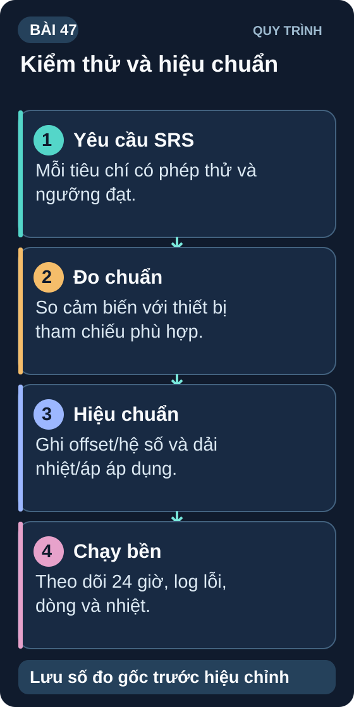

Đồ Án — Integration Test & Calibration
Test toàn hệ thống theo yêu cầu SRS, calibration cảm biến và xác nhận hiệu suất đáp ứng thông số kỹ thuật.
- Viết và chạy Test Plan đầy đủ theo yêu cầu SRS
- Calibration offset cho cảm biến nhiệt độ — so sánh với nhiệt kế chuẩn
- Calibration ADC pin bằng đa điểm (multi-point calibration)
- Đo và validate thời gian pin thực tế vs ước tính
- Stress test: chạy liên tục 24h — có crash không?
- Regression test — sau khi sửa bug, test lại toàn bộ
- Viết Test Report đơn giản — kết quả P/F cho từng FR

1. Test Plan — Từ SRS đến bảng test
| Test Case | FR/NFR | Điều kiện test | Kết quả mong đợi | Kết quả thực | P/F |
|---|---|---|---|---|---|
| TC-001: Đọc nhiệt độ | FR1, NFR1 | Đặt cạnh nhiệt kế chuẩn ở 25°C | 25°C ± 0,5°C | _____ | _____ |
| TC-002: Upload Cloud | FR3 | Có WiFi, 60 giây chạy | Dữ liệu hiện trên Adafruit IO | _____ | _____ |
| TC-003: Cảnh báo nhiệt | FR4 | Hà hơi vào cảm biến (>35°C) | Telegram alert trong <30s | _____ | _____ |
| TC-004: Thời gian pin | NFR2 | Charge đầy, chạy đến cắt nguồn | ≥ 24 giờ | _____ | _____ |
| TC-005: Stability 24h | NFR (reliability) | Chạy liên tục 24h, WiFi sẵn | Không crash, dữ liệu liên tục | _____ | _____ |
2. Calibration Cảm Biến — Nhiệt độ Offset
// Calibration offset — so sánh với chuẩn
// Đo cùng lúc với nhiệt kế thủy ngân/digital chuẩn
float TEMP_OFFSET = -1.5; // Điều chỉnh sau khi đo
float getCalibratedTemp() {
return bme.readTemperature() + TEMP_OFFSET;
}
// Multi-point calibration (3 điểm: 20°C, 25°C, 30°C)
// Đo cả 3 điểm, lấy trung bình offset:
// T_error_20 = 20.0 - T_sensor_at_20
// T_error_25 = 25.0 - T_sensor_at_25
// T_error_30 = 30.0 - T_sensor_at_30
// OFFSET_AVERAGE = (T_error_20 + T_error_25 + T_error_30) / 3
3. Stability Test — Chạy 24 giờ liên tục
Enable Serial log mỗi 60 giây: timestamp, sensor values, heap free, WiFi RSSI.
Chạy liên tục 24h. Ghi log vào SD card hoặc terminal logging tool (CoolTerm, PuTTY).
Kiểm tra log: có khoảng trống không? (= ESP reset). Heap có giảm? WiFi RSSI có dao động lớn?
Nếu có reset: xem reset reason bằng
esp_reset_reason()— WDT, panic, brownout?
Sau khi điền bảng test, phân loại failures theo: (a) Hardware bug: linh kiện hỏng, hàn kém → rework; (b) Firmware bug: logic sai, race condition → fix code; (c) Configuration bug: ngưỡng sai, timeout sai → sửa config.h; (d) Performance miss: chậm hơn yêu cầu → tối ưu code hoặc điều chỉnh NFR nếu có lý do kỹ thuật. Tất cả failures phải có ticket và kế hoạch sửa trước khi demo.